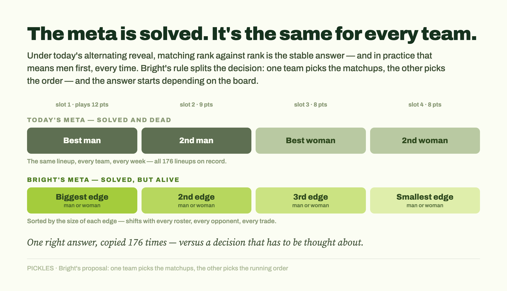
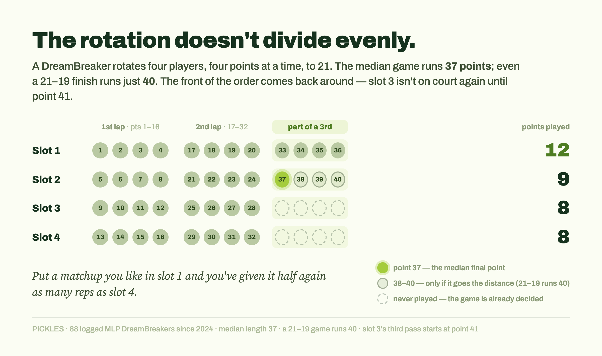
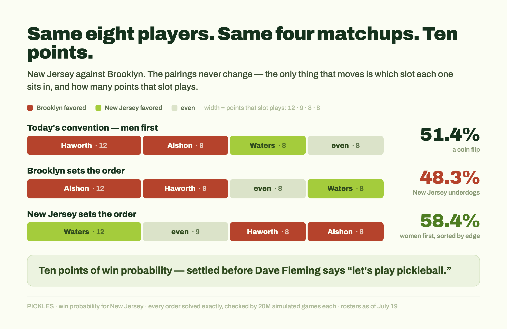
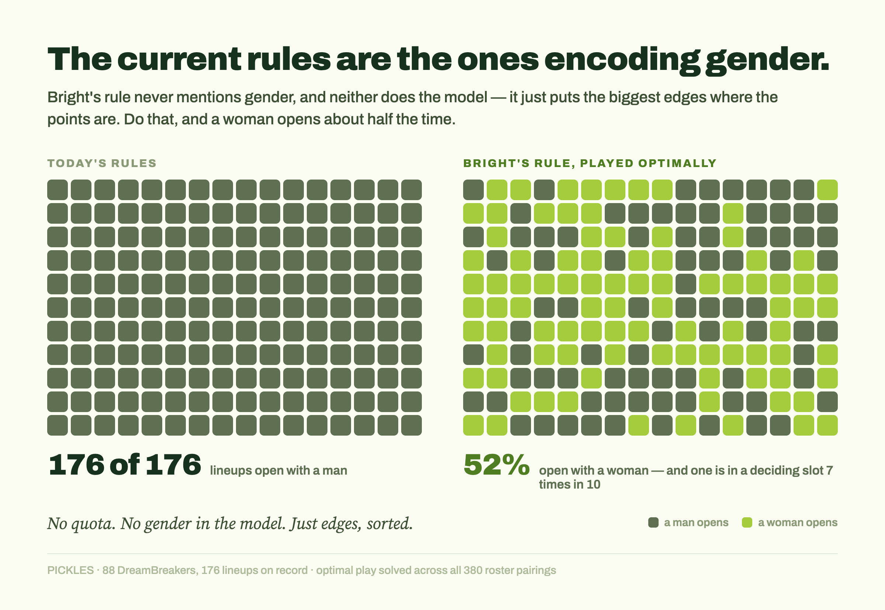

This piece is built on Anna Bright's idea. She spotted the problem, understood why it matters to the league, and proposed the fix. What I've added is a test of it across all of MLP, a solution to the meta she called unsolved, and numbers on how much of a difference it would make. The insight is hers.
Every probability here comes from PICKLES, my Bayesian rating system for pro pickleball. Full method at the bottom for anyone who wants to check it.
MLP sells the DreamBreaker as one of the best things it has — the tiebreaker, the closer, the moment the whole broadcast has been building toward. It has also become the most predictable part of the match. Best man, second man, best woman, second woman. Lather, rinse, repeat, two and a half times through, until somebody gets to 21. The meta is solved, it's the same for every team, and it's boring in the specific way a thing gets boring when there's only one right answer.
It's also an answer that quietly makes women worth less than they should be in MLP — a league that pays its men and women equally, markets that parity as its signature, and has an executive on record saying the early data shows women may matter more to winning than anyone assumes. Quietly, at least, until Anna Bright said it out loud on her YouTube channel and in her newsletter. The women aren't the support act here. The league says so itself, loudly, and it's one of the better things about the sport.
Which is the strange thing about the DreamBreaker. It's the piece of the product MLP hypes hardest, and it works quietly against most of what the league is selling everywhere else.
Bright proposed another way. And it does three things the current format doesn't: it puts strategy and tension back into what's supposed to be the league's marquee moment; it gets the sport's most marketable players on court when the match is actually being decided; and it removes the current incentive to overinvest in men simply because, under the current rules, men are the ones who swing DreamBreakers.
Her fix is simple enough to be plausible: instead of the two teams building the lineup together, one team sets the matchups and the other sets the order. She's floated it to commissioner Samin Odhwani and thinks it could run as early as 2027. She also called it an unsolved meta, which is the part that got my attention — so I solved it.

A DreamBreaker runs to 21, rally scoring, four players rotating four points at a time. Slot 1 plays points 1 through 4, slot 2 plays 5 through 8, on down, then back to slot 1. Easy enough.
The thing that's easy to miss is that the rotation almost never divides evenly into the game. Bright ran this on a 21–19 finish and found the front two slots take about 60% of the points played. My data going back to 2024 says roughly the same: the median DreamBreaker runs 37 points, and 37 doesn't come out clean — it's two full laps and part of a third.
That part of a third turns out to be the most important part.
The front of the rotation comes back around and the back of it doesn't. Slot 1 plays its four, plays four more, and then gets a full third pass before the game ends. Slot 2 gets part of one. Slots 3 and 4 usually play twice and never see a third look. In a median-length game, slot 1 handles twelve points, slot 2 nine, and the back two eight apiece.
Which makes the running order a lever. Put a favorable matchup in slot 1 and you run it twelve times. Put an unfavorable one at the back and you only have to survive it eight. Nothing about the players changed. You just gave your best matchup half again as many reps as your worst one.

Under the current rules, the lineup is built as an alternating reveal. The team that reacted in mixed doubles names its first player. The other team sees that and names who they'll put across from them. Then both name their second, their third, their fourth — back and forth, each pick made with a little more information than the last.
The reveal is almost entirely theater. In a solved meta everybody already knows what the other side is going to do — it's a ceremony performed over a result any fan in the building could have written down beforehand.
Nobody really wields the order here, and that's not a failure of imagination. When you're revealing one rung at a time with the same information your opponent has, the safe move is to match strength against strength: lead with your best, answer their best with yours, on down. Manufacture a mismatch anywhere and you've opened a gap somewhere else for them to walk into on the next pick. Rank-against-rank is the stable answer, and in practice that has meant men first — every DreamBreaker on record opens with a man — so rank-against-rank becomes Man 1, Man 2, Woman 1, Woman 2. It's not lazy. It's the correct answer to the current game.
And it has a pernicious side effect. If the men are in the first two slots, they're the ones getting the third pass and the extra points. Bright points out that DreamBreakers are usually won at the first or second position, and the logs back her up: in seven of every ten, both men are on court for the deciding point. Under this arrangement men aren't just ranked first. They're structurally the ones who win DreamBreakers, which makes them worth more to a roster than the box score says they should be.
Under Bright's proposed rule, all of that is back in play. Variety in the lineups, real strategy in the decision, and a live possibility that the women become the ones deciding DreamBreakers rather than the men.
The first team picks the matchups. Not the order — just who plays whom. They look at the eight players on the court and pair them off: our man against their man, our woman against their woman, or any other arrangement they like. All four pairings, decided at once, and then they're done. They have no say in what happens next.
The second team takes those four fixed pairings and decides the running order. They can't change who plays whom — the matchups are locked. All they choose is which pairing opens the game in slot 1, which one plays second, third, and which one finishes at the back.
So each team gets exactly one job, and the jobs are opposites. One team decides what the four contests are. The other decides how many points each contest gets to be worth. [‡ who gets which job — see end]
That second job is the one the arithmetic above just made valuable. Twelve points at the front against eight at the back means the team holding the order can take whichever pairing they like best and give it half again as many reps as the pairing they like least — and the team that chose the matchups can only watch it happen.
That's the change. Not a new rule about who plays, or how many points, or what counts as a win. Just the two halves of the lineup decision, pulled apart and handed to different people. And a lever nobody could really grip when it was shared becomes decisive the moment it sits in one hand.
That's the abstract version. Here's a real one — and then the numbers.
Bright's argument runs on a particular kind of matchup: a team whose strength is two elite men against a team whose strength is two elite women. Here's a version of that from last week.
Brooklyn's men are Chris Haworth, currently ranked first in the world in singles, and Christian Alshon, ranked fourth. That's the duo Bright herself points to when she talks about a men's pairing carrying a team. New Jersey answers with Anna Leigh Waters — also first in the world, and not narrowly; she sits above the rest of the singles field by a margin nobody else in the sport enjoys — and behind her, a world-class second in Jorja Johnson.
Brooklyn can live with that second matchup. Jackie Kawamoto is world class herself, and against Johnson it's close enough to call even.
So the board isn't one mismatch against three even contests. It's three mismatches, and two of them belong to Brooklyn. Haworth over Khlif, Alshon over Howells, Waters over Rohrabacher. No shade to Rohrabacher — Waters against just about anybody is going to be the largest single gap on the court. And Brooklyn's two are the ones that get to go first.
Line them up the way the convention builds them, and the whole thing is visible at a glance:
| Slot | Matchup | Favored | Points played |
|---|---|---|---|
| 1 | Haworth vs. Khlif | Brooklyn | 12 |
| 2 | Alshon vs. Howells | Brooklyn | 9 |
| 3 | Waters vs. Rohrabacher | New Jersey | 8 |
| 4 | Johnson vs. Kawamoto | even | 8 |
Brooklyn's two advantages open the rotation and collect the extra passes. New Jersey's sits third. The biggest edge on the court is the one that gets used least.
And the table understates it, because slot 3 doesn't get a third pass until point 41. Nine DreamBreakers in ten are over by point 40. So on most nights Waters plays her eight points and that's the whole of it, while Haworth comes back for a full third pass and Alshon usually does too.
| Game ends | Brooklyn's two edges | New Jersey's edge | Ratio |
|---|---|---|---|
| in slot 1's third pass (32% of games) | 20 points | 8 points | 2.5:1 |
| through slot 2's third pass (44%) | 24 points | 8 points | 3:1 |
It isn't two mismatches against one. In practice it's closer to three. The math is hard for New Jersey to overcome, and none of it is about who's better.
Those four pairings don't change for the rest of this section. The only thing that moves is which slot each one sits in.
The order above is the one both teams build today. Men first, women behind them, everybody following the convention. I ran it through the model — the method is at the bottom if you want it.
New Jersey wins 51.4% of the time.
It's a coin flip because Brooklyn has neutralized the largest advantage on the court. New Jersey has Anna Leigh Waters — the player the sport puts on its posters, the one everybody calls the greatest to play it, the one with the Nike deal.
But look at what Brooklyn had to do to get here. They didn't find somebody who could beat her; nobody has. They put together two men who are very good at singles and let the rotation take care of the rest. Their two edges play twelve points and nine at the front. Hers plays eight at the back, and nine nights in ten it never comes around again.
So the best available counter to the biggest asset in pro pickleball is a roster of good men's singles players and a rotation that keeps her away from the ending. The counter isn't a player at all. It's a slot.
That seems off.
Nobody did anything strange to produce it. Her edge is completely intact — she just doesn't get many points to spend it on. It's the exact bind Bright describes: reacting to a men-first order, the team with the best woman in the world ends up running her at the back.
Now run it under Bright's rule. New Jersey sets the matchups — the same rank-against-rank board, since that's still their best move — and Brooklyn gets the order.
Brooklyn pushes Waters all the way to slot 4, where the third pass never arrives, and slides the even matchup up to slot 3 to soak up the points she'd otherwise have played.
| Slot | Matchup | Favored | Points played |
|---|---|---|---|
| 1 | Alshon vs. Howells | Brooklyn | 12 |
| 2 | Haworth vs. Khlif | Brooklyn | 9 |
| 3 | Johnson vs. Kawamoto | even | 8 |
| 4 | Waters vs. Rohrabacher | New Jersey | 8 |
New Jersey drops to 48.3%. Underdogs.
This assumes the coach plays it strategically, which seems fair given the money and the stakes in those moments. They're reading the rotation correctly, and the rule is what makes it the right answer.
They do the same thing in reverse. Pushing their advantages means featuring the women — Waters first, Johnson second — and keeping Brooklyn's biggest strength off the court as much as possible. Sort by where the edges actually are rather than by who's a man, and the answer comes out as the exact mirror image of the convention.
| Slot | Matchup | Favored | Points played |
|---|---|---|---|
| 1 | Waters vs. Rohrabacher | New Jersey | 12 |
| 2 | Johnson vs. Kawamoto | even | 9 |
| 3 | Khlif vs. Haworth | Brooklyn | 8 |
| 4 | Howells vs. Alshon | Brooklyn | 8 |
Women first, men behind them. Waters plays twelve points instead of eight, and Brooklyn's two advantages get pushed to the back where the rotation stops coming around.
Under this arrangement New Jersey are a decent favorite: 58.4%.
Same eight players. Same four matchups. Same court, same night.
48.3%. 51.4%. 58.4%.
Ten points of win probability. A real strategic edge, though not a game-breaking one — and all of it settled before Dave Fleming says “let's play pickleball.”

Look at New Jersey's side of it. Under the current convention, Waters is scheduled into the part of the rotation that plays least — the marquee player in the format the league sells as its marquee moment. Seven of those ten points are theirs to pick up just by moving her to the front. Seven points of win probability, sitting on the table, attached to the most marketable asset in the building.
That was a very specific board. Particular players, particular matchups, built on what we happen to know about a handful of high-profile names and how they stack up against each other. In the last section I was playing coach.
Now I want to solve it. What's the general rule? What should any team do, against any opponent? Can we actually solve this new meta?
The team picking the matchups has two competing hypotheses available, and they point in opposite directions.
Hypothesis 1: mismatches create opportunity. Pair aggressively. Put your best player across from their weakest and take one contest going away. You've manufactured an edge that didn't exist on a level board, and edges win DreamBreakers.
Hypothesis 2: evenness creates stability. Pair rank against rank. Give up any shot at a runaway contest in exchange for a board with nothing on it worth exploiting.
Either way, assume the other team acts rationally. They take whatever board they're handed and sort it biggest gap to smallest — the matchups they like at the front where the points are, the ones they don't at the back.
So which hypothesis wins? The only way to know for sure is to run it.
Every roster pairing in the league. Three hundred and eighty of them, counting both directions, because it matters which side is holding which pen. For each pairing, both hypotheses: the most unbalanced board that team could build, and the level one. Then the opponent's best response to each — not guessed, solved. Every possible running order, evaluated.
Then I ran the whole thing three separate ways, because my grandmother always told me: measure once, simulate three times. Once by exact dynamic programming, working out every rally sequence rather than sampling them. Once by a second dynamic program written from scratch against the written rules, with no sight of the first. And once by brute force: twenty million simulated DreamBreakers. The three agree to within about a hundredth of a percentage point.
Unbalancing never wins. Not once, in 380 pairings.
Evenness creates stability, and stability is worth more than the opportunity you'd be buying with it. Hypothesis 2, comfortably.
There are four players on each side, and every arrangement is a permutation of the same eight people. Put your best woman across from their second-best and you've handed your own second-best to their best. You didn't create an advantage. You moved one — and in moving it you opened an equal and opposite hole somewhere else. The board always balances. The only real question is where the imbalances end up sitting.
And you don't get to answer that question. They do — and any coach worth the job is going to answer it in the way that hurts you most.
In chess you can gambit a piece away because you expect to be paid back later. Here, whether you ever get paid is somebody else's decision. You pick first, they pick second, and everything you've built is raw material for their sort. Hand them a lopsided board and they'll take your one great matchup and drop it into slot 4, where it plays eight points and the third pass never arrives. Then they'll take the hole you opened and lead with it — twelve points at the front of the rotation, first thing, every pass. Back to the chess analogy: you've given up the piece, and you only get it back if the game runs longer than it should.
So there's no cleverness available to the team picking matchups. You don't offer anything up, you don't try to steal a contest. You pair rank against rank, hand the board across, and let them arrange four matchups where the arranging barely matters. Not a thrilling answer. But it's the one that survives a competent opponent.
Which also says something about the last section. The New Jersey–Brooklyn board wasn't one I cherry-picked to make a point. It's an exemplar of what a rational team hands over, and the same logic holds across all 380 pairings.
So that's the finding, more or less: sort by edge, not by gender. There's a thinner wrinkle underneath about which slot your very best matchup belongs in, but it's a rounding error for almost everyone and I've put it in the footnotes.
That assumption is doing real work, and it's worth naming, because sorting correctly means knowing how big each gap actually is.
Knowing your own roster is the easy part. You picked these players, you practice with them, you know perfectly well who your best singles player is. Sizing up the other team isn't much harder — everybody watches everybody, and the rankings are public.
But sorting by edge doesn't ask you to rank players. It asks you to rank gaps — to look at four matchups and say which one you're winning by the most. That's a comparison across pairs, sometimes across genders, between quantities nobody ever directly observes. Two very good players against two pretty good ones, versus one great player against one decent one: which of those is the larger edge? The eye test isn't built for that question.
Under the current rules it barely matters, because the meta is simple enough that intuition gets you to the right answer anyway. Under Bright's rule it would matter a great deal — and it means the edge on offer is smaller in practice than it looks on paper. You only collect it if you sort correctly, and sorting correctly is genuinely difficult.
Which also means the team with the better read on where the edges actually sit would start winning DreamBreakers the other side didn't know were winnable.
Which is how every analytics edge in every sport has ever started. Somebody works out what the rules actually reward, before anyone else bothers to check, and quietly starts winning games nobody knew were available.
So the meta does resolve. But it resolves into something different from what we have now.
The current meta is solved and dead: one answer, the same answer, for every team in the league, every week, no matter who's on the roster. This one would be solved and alive. The right move depends on your roster, your opponent's, and how the two line up, which means it shifts when rosters shift and looks different in every matchup.
Solved was never the problem. Dead was.
Bright's argument was never really about running orders. It's about contribution — who gets to affect a DreamBreaker, who's on the court when it's decided, and why it doesn't have to be a man in that spot essentially every time.
Conventions survive because nobody questions them, not because they're right. This one worked well enough, was easy to explain, and every team in the league did it — which is usually enough to keep a thing alive indefinitely. It took Bright looking at it and asking why.
So take the answer from the last section and follow it out. Sort by edge, not by gender. If the problem is that only men are on the court when it matters, does this actually fix it?
Here's the whole thing in two numbers.
Under the current rules, the meta is solved. My dataset covers 88 DreamBreakers — 176 lineups, since both teams build one. A man has opened all 176.
It's solved the same way every single time, which is beyond solved. It's dead, it's boring, and it creates a concrete incentive to value male players more.
Under Bright's rule, played properly, a woman would open about half — 52%.

Nobody engineered that. Bright's rule doesn't mention gender — there's no quota, no requirement, no convoluted machinery obliging anyone to play their women more. My model doesn't know which matchups are the women's and which are the men's. All it knows is how to find the edge, the biggest gaps between two players, and put those gaps where the points are.
Which points at something backwards about the way this usually gets argued. It's the current system that encodes gender, consistently, in every one of those 176 lineups. Bright's doesn't encode it at all.
And it wouldn't be women every time, either — that's rather the point. Rosters have limited money, so short of everybody assembling a super team, most sides end up leaning one way or the other. Brooklyn can carry Haworth and Alshon, and their biggest gaps will keep turning up in the men's matchups. New Jersey can carry Waters and Johnson, and theirs will keep turning up in the women's. Each team leads with what it actually built.
It lands near half across the league because half is what falls out when nobody's sorting by gender in the first place. That isn't a loophole. It's what a mixed-gender sport ought to look like, and it's what makes the thing interesting. Widen it to the two slots that decide most DreamBreakers and a woman is in one of them about seven times in ten.
Bright identified the mechanism herself — best players first, because DreamBreakers get won at the front of the rotation — and worked out that handing the order to the other team would change who plays those points. What this shows is exactly how much her rule would move the meta, and what it would be worth to MLP.
So the format doesn't sideline women by ignoring them. It sidelines them by putting them where the match isn't — and nobody involved is doing a thing wrong. Under the current rules that's the right answer, and when money and wins and prestige are on the line, people find the right answer. They did here. All 176 times.
Assuming good intent all around, the rules caused this and the rules can fix it. Teams follow incentives, and they follow them well — well enough to keep the biggest name in the sport off the court for the points that decide the match. Change what the optimal strategy asks for and the behavior changes with it, without requiring anyone to think differently about anything. Under Bright's rule, the same coaches doing the same rational thing put a woman in the first slot half the time — not because the rule tells them to, but because it stops paying them not to.
Pickleball already understands this. Play 7-11 — where the player at the kitchen needs eleven points and the player at the baseline needs seven — and nobody calls it unfair. It's a rule written in full knowledge that the two positions aren't worth the same, and priced accordingly.
But the price is a choice, not a discovery. You could just as easily play 5-13, or 9-10, or 2-17. Each one shifts the balance, changes which end of the court you'd rather start on, and produces a different set of winners. Nobody arrived at seven and eleven because those were the neutral numbers. They arrived there because it made for a close, enjoyable game — and, one assumes, because everybody already knew the name.
The DreamBreaker is built out of choices like that — choices that directly shape who wins — and most of them go unremarked. Start with the biggest: it settles a doubles competition with singles. MLP could just as easily rotate doubles pairs through the tiebreaker, and that would be a perfectly reasonable way to finish a doubles match. They don't, because a singles ending does something a doubles ending can't — it isolates players, it makes the finish legible, and it's more interesting to watch. That's a deliberate thumb on the scale toward a particular kind of player, accepted in exchange for a better spectacle.
Then the rest of it. A rotation that hands the front slots more points than the back ones. And a running order that has to be arrived at somehow — fixed in advance, revealed one player at a time, alternating between teams, drawn out of a hat. Every one of those encodes a different set of biases.
There is no version that encodes none.
So the question was never whether the DreamBreaker would have a bias. It was which ones, and how we feel about them on the dimensions that matter. The current answer hands the busy slots and the deciding points to whoever gets sorted first, and the convention sorts men first. That isn't a moral failing. It's just a choice that nobody remembers making, and the choices nobody remembers making are the ones whose preferences already match our assumptions.
Which is worth keeping in mind if the objection to Bright's rule is that it puts a thumb on the scale. It does. So does this one. So does any of them. The difference is what they're weighing for.
Hers weighs for a running order that has to be thought about instead of copied. For the players the league sells tickets on being present at the moments it sells them for. And for a roster calculation that stops quietly discounting half the team before the season starts.
None of that asks anyone to value women more on principle. It asks them to keep doing exactly what they're already doing — reading the rules, finding the best available strategy, with money and wins and standings on the line. Teams are good at that. They've proven it 176 times. Nobody has to stop optimizing for their win rate. What changes is what optimizing for it asks of them.
Bright's version is more interesting to watch, and it puts more women on the court for the points that decide the match. That's the whole case.
Every probability in this post comes from PICKLES, a Bayesian rating system I built for pro pickleball: roughly 36,000 games of training data, validated at 77.4% winner accuracy across 884 games — spanning 760 matches — that the model never saw. Ratings are fitted on games through July 11 for doubles and June 26 for singles; rosters are as of July 19.
The three DreamBreaker orders were computed three separate ways. First by exact dynamic programming — every possible rally sequence, solved outright rather than sampled. Then by a second dynamic program written from scratch against the written rules alone, with no sight of the first. Then by 20 million simulated games per order as a check on both. The three agree to within about a hundredth of a percentage point, which is the entire reason I'm willing to quote a number like 58.4% to a decimal place.
The slot mechanics are not modeled at all. Points per slot, where games actually end, how often the final point lands in each position — that's logged data from 88 real DreamBreakers, counted rather than estimated.
Where I say the model says something, I mean a specific number I can show you. Where I'm inferring, I've tried to say so.
There's a sweatier optimum hiding in here. Because the median DreamBreaker runs 37 points and the final point lands in slot 2 more than any other slot — 44% of the time, versus 32% for slot 1 — your single biggest edge is very slightly better spent clinching from slot 2 than leading off from slot 1. (Point 37 is slot 2's third pass; the rotation that gives slot 1 the most points gives slot 2 the last one.) Emphasis on slightly: the median gain is about 0.29 points of win probability. What makes it grow isn't how good your best player is — it's how far clear your best matchup sits from your second-best. If your top two are close together there's nothing to gain by choosing between them, and the whole question dissolves.
It's the same argument as who takes the fifth penalty in a shootout. Some managers lead with their best taker; others hold him back for the one that ends it. There's never been much of a statistical answer there either, and when the edge is a fraction of a percentage point, folk wisdom is probably doing fine. It also demands a precision in your talent estimates the eye test can't supply, and it carries a real tail risk of losing before your best player rotates back in. It's pickleball's version of going for it on fourth down: positive expected value, small, and easy to second-guess when it fails — which is why, in practice, nobody will.
This is the board as it stood on July 19. Five days later New Jersey traded for Federico Staksrud, a men's singles specialist — behaving exactly like a team responding to the incentives described below, and rudely wrecking an example I had already locked. I can't tell you that was their reasoning. I can tell you it's what the format pays for. The arithmetic holds either way: run it with Staksrud and the ordering swing survives at seven to nine points, it's just shifted throughout, and New Jersey is favored under every order including the one where Brooklyn does everything right. What changes is the story around it — the counter to having Waters was two strong men's singles players, and the counter to that was another one. I wouldn't lean too hard on that as evidence of anything; roster moves answer to doubles far more than to DreamBreakers, and the available upgrades aren't symmetric. But it's the direction the escalation runs.
Bright's version answers this: the home team announces the matchups and the visitors pick the order. That matters more than it sounds, because the two jobs aren't worth the same — across the league, holding the order is worth about five points of win probability over holding the matchups. Whether that means much where home and away are largely nominal is a fair question, but it's a real choice and there are others on the shelf. A coin flip. The team that lost the previous match, which builds in a comeback mechanism. The higher seed, which rewards the regular season instead. Each one produces a different-looking DreamBreaker, and picking between them is a league design decision rather than a math problem.
Bright, Anna. “Women Don't Matter Enough at Major League Pickleball.” YouTube, June 2026 — the video where she lays out the problem, the 21–19 arithmetic, and the matchups-vs.-order proposal.
Bright, Anna. “Women Don't Matter Enough at MLP.” Brighter Pickleball w AB, June 15, 2026 — the written version, on her newsletter.